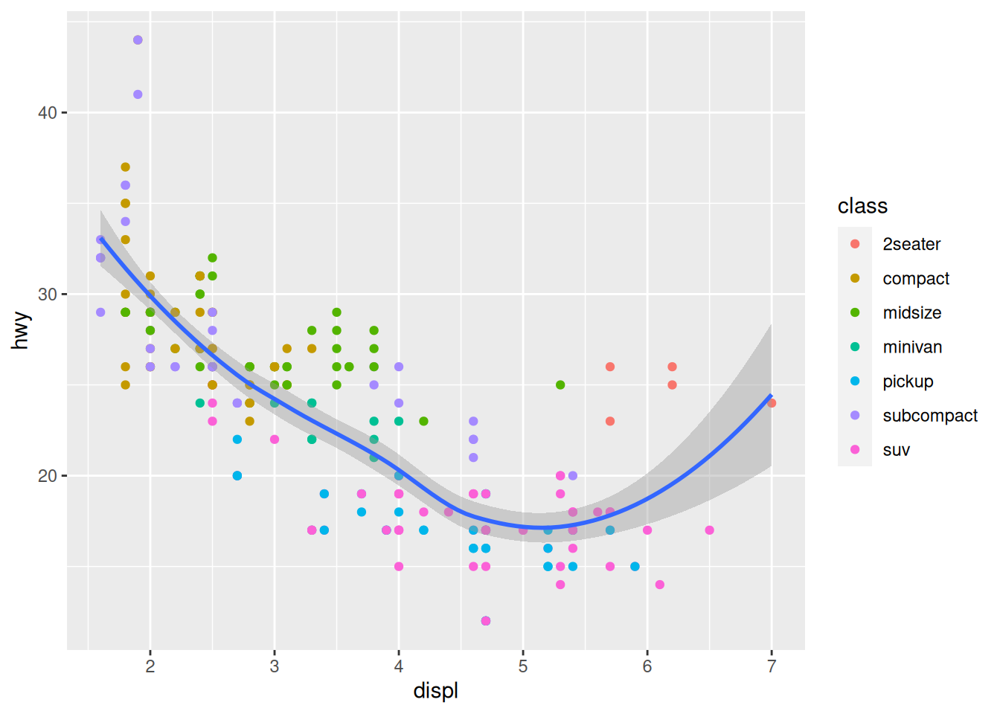
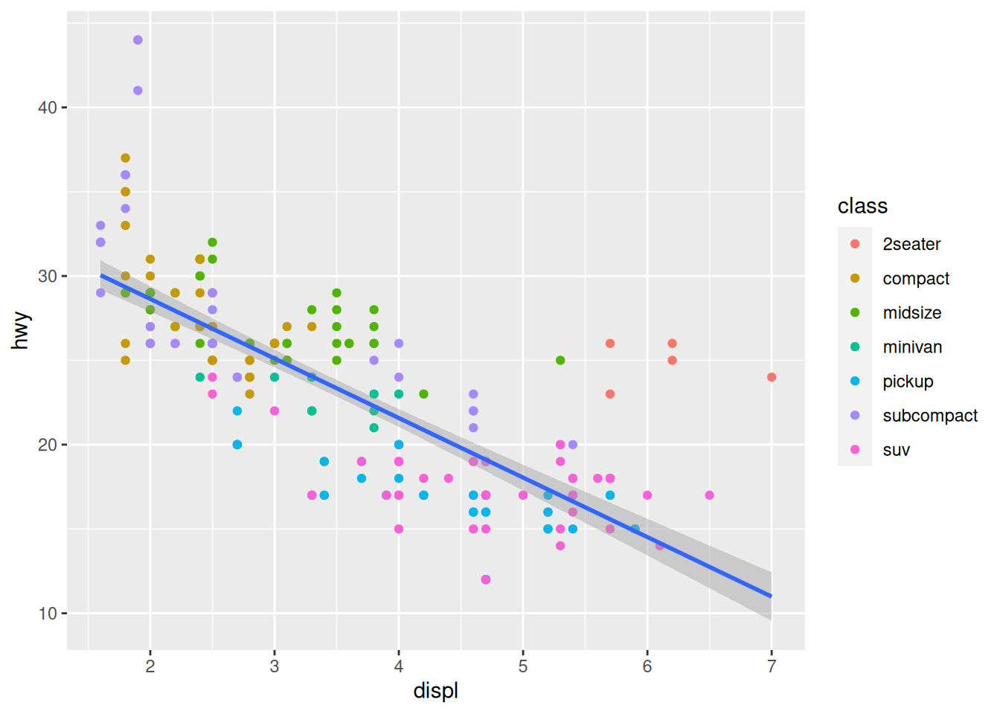
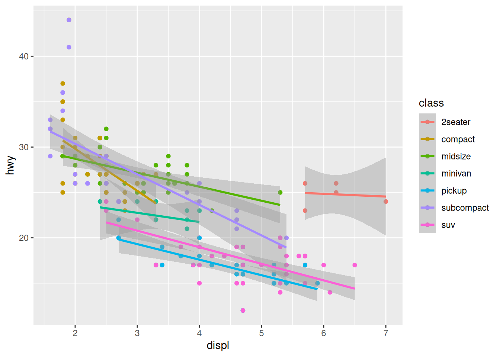
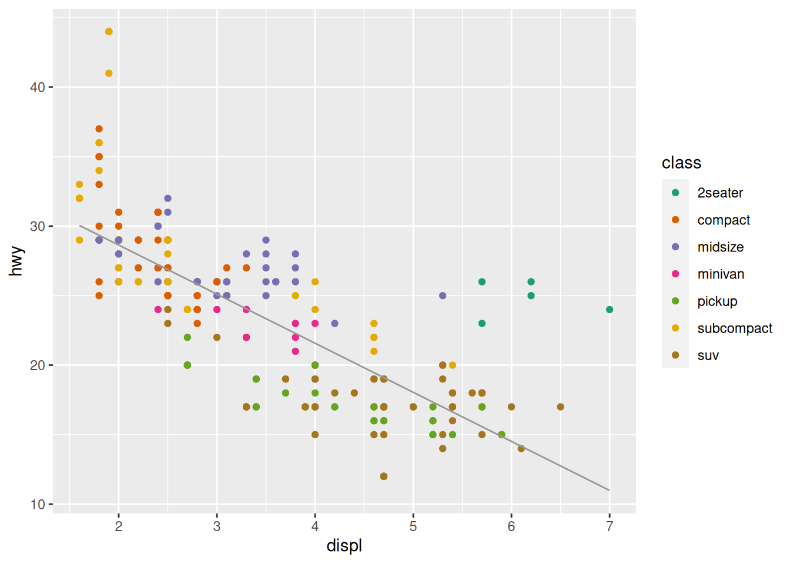
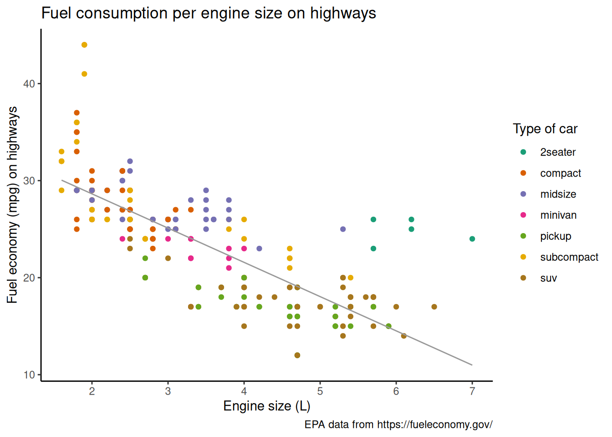

library(ggplot2)Plotting
This section focuses on plotting in R with the package ggplot2 from the tidyverse.
The data
R comes with a number of datasets. You can get a list by running data(). The ggplot2 package provides additional ones. We will use the mpg dataset from ggplot2.
To access the data, let’s load the package:
Here is what that dataset looks like:
mpg# A tibble: 234 × 11
manufacturer model displ year cyl trans drv cty hwy fl
<chr> <chr> <dbl> <int> <int> <chr> <chr> <int> <int> <chr>
1 audi a4 1.8 1999 4 auto(l5) f 18 29 p
2 audi a4 1.8 1999 4 manual(m5) f 21 29 p
3 audi a4 2 2008 4 manual(m6) f 20 31 p
4 audi a4 2 2008 4 auto(av) f 21 30 p
5 audi a4 2.8 1999 6 auto(l5) f 16 26 p
6 audi a4 2.8 1999 6 manual(m5) f 18 26 p
7 audi a4 3.1 2008 6 auto(av) f 18 27 p
8 audi a4 quattro 1.8 1999 4 manual(m5) 4 18 26 p
9 audi a4 quattro 1.8 1999 4 auto(l5) 4 16 25 p
10 audi a4 quattro 2 2008 4 manual(m6) 4 20 28 p
class
<chr>
1 compact
2 compact
3 compact
4 compact
5 compact
6 compact
7 compact
8 compact
9 compact
10 compact
# ℹ 224 more rows?mpg will give you information on the variables. In particular:
displcontains data on engine displacement (a measure of engine size and thus power) in litres (L).hwycontains data on fuel economy while driving on highways in miles per gallon (mpg).drvrepresents the type of drive train (front-wheel drive, rear wheel drive, 4WD).classrepresents the type of car.
We are interested in the relationship between engine size and fuel economy and see how the type of drive train and/or the type of car might affect this relationship.
Base R plotting
R contains built-in plotting capability thanks to the plot() function.
A basic version of our plot would be:
plot(
mpg$displ,
mpg$hwy,
main = "Fuel consumption per engine size on highways",
xlab = "Engine size (L)",
ylab = "Fuel economy (mpg) on highways"
)Grammar of graphics
Leland Wilkinson developed the concept of grammar of graphics in his 2005 book The Grammar of Graphics. By breaking down statistical graphs into components following a set of rules, any plot can be described and constructed in a rigorous fashion.
This was further refined by Hadley Wickham in his 2010 article A Layered Grammar of Graphics and implemented in the package ggplot2 (that’s what the 2 “g” stand for in “ggplot”).
ggplot2 has become the dominant graphing package in R. Let’s see how to construct a plot with this package.
Plotting with ggplot2
The first component is the data:
ggplot(data = mpg)
This can be simplified into ggplot(mpg).
The second component sets the way variables are mapped on the axes. This is done with the aes() (aesthetics) function:
ggplot(data = mpg, mapping = aes(x = displ, y = hwy))This can be simplified into ggplot(mpg, aes(x = displ, y = hwy)).
Onto this canvas, we can add “geoms” (geometrical objects) representing the data. The type of “geom” defines the type of representation (e.g. boxplot, histogram, bar chart).
To represent the data as a scatterplot, we use the geom_point() function:
ggplot(mpg, aes(x = displ, y = hwy)) +
geom_point()
We can colour-code the points in the scatterplot based on the drv variable, showing the lower fuel efficiency of 4WD vehicles:
ggplot(mpg, aes(x = displ, y = hwy)) +
geom_point(aes(color = drv))Or we can colour-code them based on the class variable:
ggplot(mpg, aes(x = displ, y = hwy)) +
geom_point(aes(color = class))If we want to change the colour scale, we add another layer for this:
ggplot(mpg, aes(x = displ, y = hwy)) +
geom_point(aes(color = class)) +
scale_color_brewer(palette = "Dark2")
Multiple “geoms” can be added on top of each other. For instance, we can add a smoothed conditional means function that aids at seeing patterns in the data with geom_smooth():
ggplot(mpg, aes(x = displ, y = hwy)) +
geom_point(aes(color = class)) +
scale_color_brewer(palette = "Dark2") +
geom_smooth()`geom_smooth()` using method = 'loess' and formula = 'y ~ x'
Thanks to the colour-coding of the types of car, we can see that the cluster of points in the top right corner all belong to the same type: 2 seaters. Those are outliers with high power, yet high few efficiency due to their smaller size.
The default smoothing function uses the LOESS (locally estimated scatterplot smoothing) method, which is a nonlinear regression. But maybe a linear model would actually show the general trend better. We can change the method by passing it as an argument to geom_smooth():
ggplot(mpg, aes(x = displ, y = hwy)) +
geom_point(aes(color = class)) +
scale_color_brewer(palette = "Dark2") +
geom_smooth(method = lm)`geom_smooth()` using formula = 'y ~ x'
Other arguments to geom_smooth() can set the line width, color, or whether or not the standard error (se) is shown:
ggplot(mpg, aes(x = displ, y = hwy)) +
geom_point(aes(color = class)) +
scale_color_brewer(palette = "Dark2") +
geom_smooth(method = lm, se = FALSE, color = "#999999", linewidth = 0.5)`geom_smooth()` using formula = 'y ~ x'We can keep on adding layers. For instance, the labs() function allows to set title, subtitle, captions, tags, axes labels, etc.
ggplot(mpg, aes(x = displ, y = hwy)) +
geom_point(aes(color = class)) +
scale_color_brewer(palette = "Dark2") +
geom_smooth(method = lm, se = FALSE, color = "#999999", linewidth = 0.5) +
labs(
title = "Fuel consumption per engine size on highways",
x = "Engine size (L)",
y = "Fuel economy (mpg) on highways",
color = "Type of car",
caption = "EPA data from https://fueleconomy.gov/"
)`geom_smooth()` using formula = 'y ~ x'
Another optional layer sets one of several preset themes.
Edward Tufte developed, amongst others, the principle of data-ink ratio which emphasizes that ink should be used primarily where it communicates meaningful messages. It is indeed common to see charts where more ink is used in labels or background than in the actual representation of the data.
The default ggplot2 theme could be criticized as not following this principle. Let’s change it:
ggplot(mpg, aes(x = displ, y = hwy)) +
geom_point(aes(color = class)) +
scale_color_brewer(palette = "Dark2") +
geom_smooth(method = lm, se = FALSE, color = "#999999", linewidth = 0.5) +
labs(
title = "Fuel consumption per engine size on highways",
x = "Engine size (L)",
y = "Fuel economy (mpg) on highways",
color = "Type of car",
caption = "EPA data from https://fueleconomy.gov/"
) +
theme_classic()`geom_smooth()` using formula = 'y ~ x'The theme() function allows to tweak the theme in any number of ways. For instance, what if we don’t like the default position of the title and we’d rather have it centered?
ggplot(mpg, aes(x = displ, y = hwy)) +
geom_point(aes(color = class)) +
scale_color_brewer(palette = "Dark2") +
geom_smooth(method = lm, se = FALSE, color = "#999999", linewidth = 0.5) +
labs(
title = "Fuel consumption per engine size on highways",
x = "Engine size (L)",
y = "Fuel economy (mpg) on highways",
color = "Type of car",
caption = "EPA data from https://fueleconomy.gov/"
) +
theme_classic() +
theme(plot.title = element_text(hjust = 0.5))`geom_smooth()` using formula = 'y ~ x'
As you could see, the way ggplot2 works is by adding a number of layers on top of each other, all following a standard set of rules, or “grammar”. This way, a vast array of graphs can be created by organizing simple components.
Thanks to its vast popularity, the ggplot2 has seen a proliferation of packages extending its capabilities: